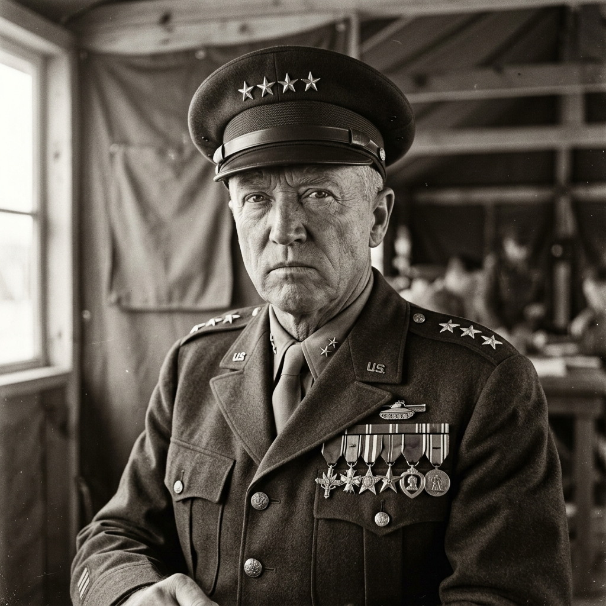

안녕하세요,
김승원입니다.
사용자의 입장에서 한 번 더 생각하는 걸 좋아하는 주니어 웹 개발자입니다. 새로운 것을 배우는 과정을 즐기고, 작은 디테일 하나가 전체 경험을 바꿀 수 있다고 믿습니다. 무언가를 끝까지 파고드는 성격 덕분에 막힌 문제도 결국엔 풀어내는 편입니다.
Good
맛있는 음식, 편안한 분위기, 조용한 분위기, 혼자 있는 것, 탐구하고 공부하는 것, 새로운 걸 알아가는 것
Bad
시끄러운 것, 놀리는 것, 남을 깔보는 것, 남의 생각을 무시하는 것, 전의 실수를 계속 놀리는 것
"실패를
두려워하지 말라"
욘 라베 (John Rabe)
난징 학살 당시 수천 명의 중국인을 보호한 독일 기업인. 자신의 안위보다 타인의 생명을 선택한 용기는, 내가 실패를 두려워하지 않는 이유가 됩니다.
조지 패튼 (George Patton)
"공포와는 타협하지 말라,
아니 상의조차도 하지 말라."
제2차 세계대전의 명장. 두려움 앞에서 물러서지 않는 그의 태도는 내가 어려운 상황에서도 정면 돌파를 택하게 합니다.
